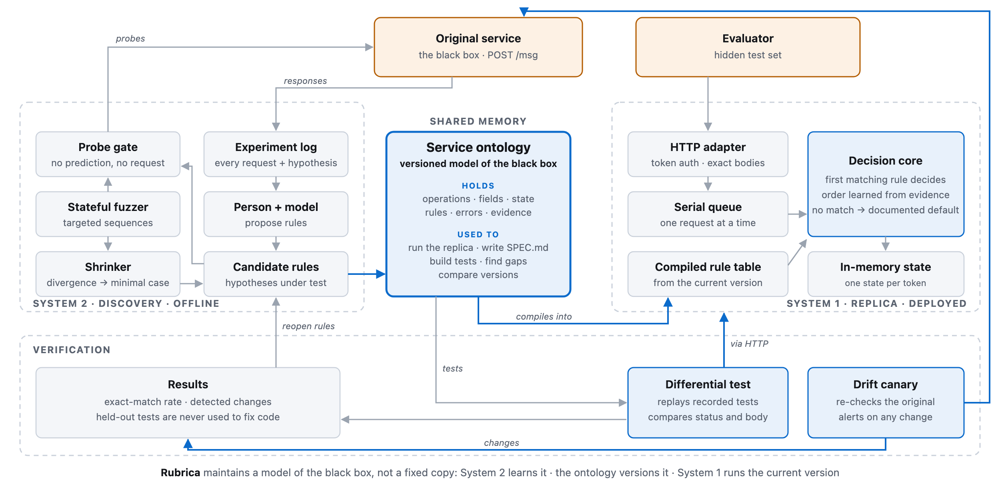

FRONTIER · BOGOTÁ 26 · RETO 2 · LA CAJA NEGRA
Rubrica
Learning a black box, one proven rule at a time.
Kevin Vicent · github.com/moebious/rubrica · blackbox.rubrica.dev
Architecture: reason offline, execute exactly

site/diagram.png (submitted 12:00) · replica live at blackbox.rubrica.dev
THE DESIGN AT WORK
Each part of the diagram caught something
| Design component | What it caught | Status |
|---|
| Drift canary | Service v2 between 15:50 and 16:00: balance format, transfer limit, lockout | 3 rule changes, v1 kept |
| Held-out set (anti-Goodhart) | Two Authorization headers: the first one decides; replica said 401 | 18 probes, fixed |
| Probe gate: hypothesis + prediction | Hidden HALT command, suggested by the service itself: 409 E520 | Confirmation never sent |
| Probe gate: targeted words | Suggestion ties: PITA gets ALTA, not PING (alphabetical) | 38 probes, fixed |
| Coverage gaps | /msg?test=1 is 200 on the original; replica routed it to 404 | Fixed |
Open gap: the spec is still a curated claims list, not generated from the rule registry.
Sources: docs/DESIGN.md §3–4 · git log (4b4d92e, 595b955, 8fb0d47, 2de693f) · docs/process/INCIDENT.md
INCIDENT FR-0153 · SERVICE V2
The incident became three data fields
| Change | V1 | V2 | Confidence |
|---|
| Balance format | 40000 | "400.00" | confirmado (11, 1164) |
| Transfer limit | 100000 | 50000 | confirmado (13, 1026) |
| Lockout after failures | not tested | 3 → 423 E510 | probable change (1059, 1060) |
V1 = Policy("v1-observed", 100000, False, None)
V2 = Policy("v2-observed", 50000, True, 3)
Canary matched at 15:50, differed at 16:00. Lockout absence in v1 was never tested, so we do not claim it.
Sources: SPEC.md §6 (log IDs in parentheses) · rubrica/rules/v2/policy.py · docs/process/INCIDENT.md
HIDDEN SET · RUN 3 OF 3 · 18:50
96/100
88 → 91 → 96 across our three runs
520 ms
median per case (limit 5 s per step)
38/40
regular · up from 36
4 failures: 2 status, 2 body · 2 at the first request, 2 later · Source: /evento/resultados, run 3 (18:50)